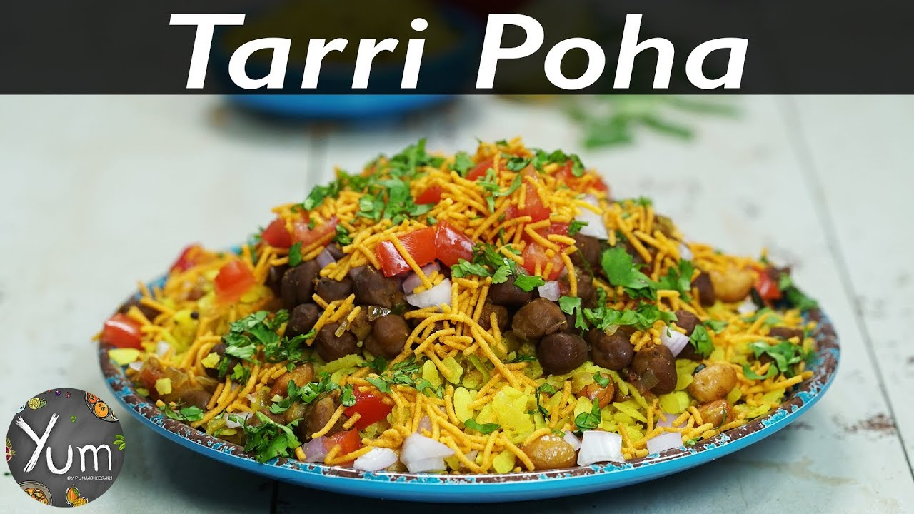

Description
Poha is flattened rice cooked with fried onions, chillies, potato and cumins.It can be topped with
coriander, peanuts and lemon.
Ingredients
- Flatened Rice
- Onions
- Potato
- Green Chillies
- Peanuts
- Coriander
- Lemon
Steps
- Soak the flattened rice in water for 5 minutes
- Chops onions and green chillies length wise
- Take a fry pan and put some vegetable oil in that
- Now fry onion,potato and green chillies for 3-4 minutes and then put tumeric masala etc
- Add Flattend Rice on that and sprinkle coriander
- Add "Tarri" and present it